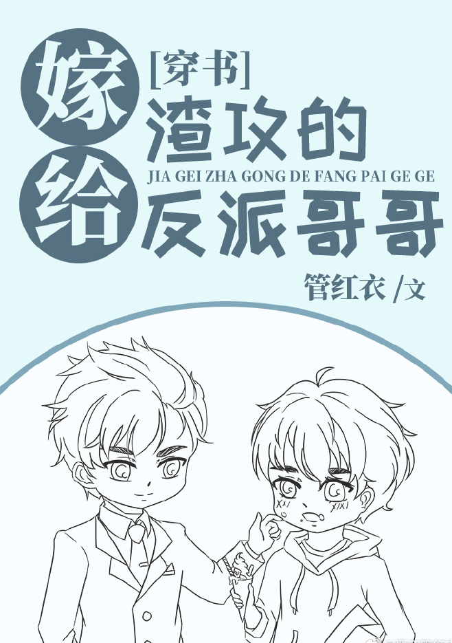

Jing Xun transmigró a una novela llamada "Todo por amor" y se convirtió en el protagonista shou que estaba a punto de saltar del edificio por amor.
En el libro original circulaba en Internet el vídeo del protagonista saltando de un edificio; era conocido como un estudiante universitario que desperdiciaba recursos educativos y no se respetaba a sí mismo.
Como tirano del aprendizaje, Jing Xun preguntó: "En serio, ¿quién es ese?"
Jing Xun era guapo y bueno estudiando. Era simplemente excelente en todos los aspectos pero su salud no era buena.
Aunque había transmigrado a una novela de escoria de BE, se sentía muy afortunado porque finalmente tenía un cuerpo sano... así que Jing Xun planeó patear el gong de escoria y hacer todas las cosas que no podía hacer antes.
Sin embargo, no esperaba que la primera cosa extraordinaria que hizo después de transmigrar fuera estar parado en una habitación claustrofóbica y oscura después de haber sido drogado, y pedir ayuda al apuesto e indiferente Sr. Piernas Largas:
"Señor, ¿puede ayudarme?"
Después de una noche de pasión, Jing Xun sintió que este caballero era una buena persona.
Hasta que dos días después, el señor Piernas Largas llamó a la puerta y quiso casarse con él.
Jing Xun:… ¿¡No fue solo una aventura de una noche!?